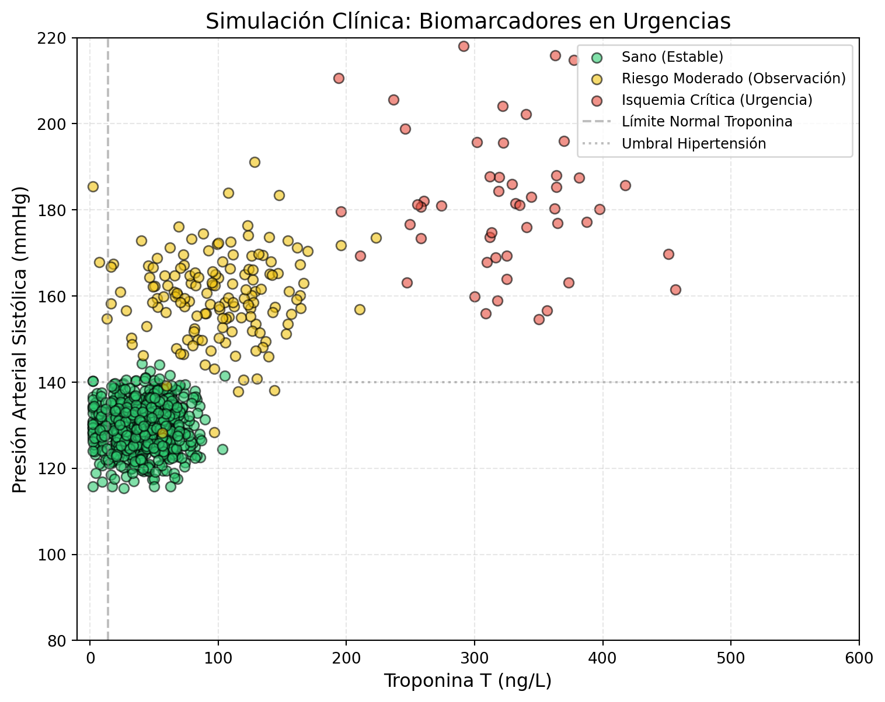

Este problema se contextualiza en la detección temprana de patologías isquémicas.
En el ámbito de la medicina de urgencias, la clasificación precisa del estado de un paciente es vital. Se busca, entonces, clasificar a los pacientes en tres categorías: sano, riesgo moderado e isquemia crítica.
En este escenario clínico, el costo de los errores es asimétrico. Un falso negativo (clasificar a un paciente con isquemia crítica como sano) es extremadamente grave, ya que priva al paciente de una intervención inmediata que podría salvarle la vida. Por el contrario, un falso positivo (clasificar a un paciente sano como de riesgo moderado) conlleva un costo menor, asociado principalmente a pruebas diagnósticas adicionales y estrés innecesario, pero sin poner en riesgo su vida. Además, la prevalencia de la enfermedad en la población es baja, lo que genera un dataset desbalanceado donde la clase de mayor interés es la menos frecuente.
En este ejercicio, resolveremos un problema de clasificación que posee desbalance de clases y costo asimétrico. Trabajaremos con datos simulados y compararemos variantes de los algoritmos vistos en clases. El siguiente ejemplo genera datos 2D:
import numpy as npimport pandas as pdimport matplotlib.pyplot as pltfrom sklearn.datasets import make_blobsdef generar_datos_realistas(n_samples=1000): np.random.seed(42)# Definimos centros en un espacio normalizado (0 a 1)# Para luego escalarlos a rangos médicos reales centros_norm = [ [0.1, 0.3], # Clase 0: Sano (Troponina baja, Presión estable) [0.25, 0.6], # Clase 1: Riesgo (Troponina subiendo, Presión alta) [0.8, 0.8] # Clase 2: Isquemia (Troponina muy alta, Presión crítica) ] stds = [0.05, 0.1, 0.15] X, _ = make_blobs(n_samples=n_samples, centers=centros_norm, cluster_std=stds, n_features=2)# Desbalance de clases: 80% Sano, 15% Riesgo, 5% Isquemia indices = np.arange(n_samples) np.random.shuffle(indices) y = np.zeros(n_samples, dtype=int) y[indices[:800]] =0 y[indices[800:950]] =1 y[indices[950:]] =2# Regenerar puntos para aplicar el desbalance real X_final = np.zeros_like(X)for clase, centro, std, n inzip([0, 1, 2], centros_norm, stds, [800, 150, 50]): idx_clase = np.where(y == clase)[0] X_final[idx_clase] = centro + np.random.randn(len(idx_clase), 2) * std# --- ESCALAMIENTO A RANGOS REALISTAS ---# Troponina T: de 0 a 500 ng/L (Valores > 14 son sospechosos) X_final[:, 0] = np.clip(X_final[:, 0] *400, 2, 1000) # Presión Arterial Sistólica: de 90 a 200 mmHg X_final[:, 1] = np.clip(X_final[:, 1] *100+100, 80, 220)return X_final, yX_med, y_med = generar_datos_realistas()plt.figure(figsize=(9, 7))colors = ['#2ecc71', '#f1c40f', '#e74c3c'] labels = ['Sano (Estable)', 'Riesgo Moderado (Observación)', 'Isquemia Crítica (Urgencia)']for i inrange(3): plt.scatter(X_med[y_med==i, 0], X_med[y_med==i, 1], c=colors[i], label=labels[i], edgecolors='k', alpha=0.6, s=40)# Añadimos líneas de referencia clínicaplt.axvline(x=14, color='gray', linestyle='--', alpha=0.5, label='Límite Normal Troponina')plt.axhline(y=140, color='gray', linestyle=':', alpha=0.5, label='Umbral Hipertensión')plt.title("Simulación Clínica: Biomarcadores en Urgencias", fontsize=14)plt.xlabel("Troponina T (ng/L)", fontsize=12)plt.ylabel("Presión Arterial Sistólica (mmHg)", fontsize=12)plt.legend(loc='upper right', fontsize=9)plt.grid(True, linestyle='--', alpha=0.3)# Ajustar límites para que se vea realistaplt.xlim(-10, 600)plt.ylim(80, 220)plt.show()

Para este ejercicio, debe generar un dataset sintético como el anterior que replique las características del entorno médico real. En el código de ejemplo, note que se generan datos 2D; en la práctica real se usan atributos elegidos “a mano” de acuerdo al conocimiento de expertos y la experiencia. Para este ejercicio, nos restringiremos a un conjunto de biomarcadores y factores de riesgo que permiten diferenciar los niveles de gravedad. Estos atributos han sido seleccionados para que el modelo tenga que lidiar con diferentes escalas, distribuciones y tipos de datos. Los atributos a considerar son:
Nombre del atributo
Significado
Tipo de variable
Naturaleza de los datos
Rangos típicos
Troponina_T
Proteína liberada por daño miocárdico. Clave para detectar isquemia crítica.
Para esta actividad, deberá implementar y comparar los siguientes modelos de regresión logística:
RegLog: Sin regularización.
RegLog-L1: Con regularización Lasso (\(\ell_1\)).
RegLog-L2: Con regularización Ridge (\(\ell_2\)).
RegLog-L1-L2: Con regularización Elastic Net (\(\ell_1\)-\(\ell_2\)).
Los modelos 1 al 4 deben desarrollarse “desde cero” (from scratch), evitando el uso de librerías de alto nivel para Machine Learning. Se permite el empleo de librerías base como numpy, matplotlib y los optimizadores de scipy. Como referencia, siga la estructura técnica presentada en este ejemplo.
Adicionalmente, deberá contrastar sus resultados con las implementaciones de referencia de scikit-learn (u otra librería de su elección), identificadas como:
5-8:RegLog-sk, RegLog-L1-sk, RegLog-L2-sk y RegLog-L1-L2-sk.
(Nota: El sufijo “-sk” hace referencia a sklearn; si utiliza otra biblioteca, ajuste la nomenclatura de forma coherente).
Elegir métricas de validación apropiadas para el problema de clasificación y, en base a estas, compara el desempeño de los algoritmos 1-8. Considere realizar un proceso exhaustivo de ajuste de hiperparámetros para los modelos. Reporte la metodología empleada y una tabla que resuma los resultados obtenidos.
Para el algoritmo 4, modifique la implementación de manera que, dentro del proceso de aprendizaje, se incorpore algún mecanismo que haga que los modelos no posean sesgos en el aprendizaje. Ejemplos de mecanismos: active learning?, modificar la funciòn de costo de manera de favorecer la clases minoritarias (dar algunos ejemplis)
Para el algoritmo 4, modifique la implementación de manera que, dentro del proceso de aprendizaje, se incorpore algún mecanismo que permita incorporar la asimetría de los costos haga que los modelos no posean sesgos en el aprendizaje. Ejemplos de mecanismos: active learning (dar algunos ejemplis)?
Se quiere responder la pregunta, ¿Cuáles variables son las más importantes para clasificar a una persona en la clase sano,riesgo moderado e isquemia crítica? De lo que tiene implementado,
Impacto de los Atributos en el Modelo
Al diseñar el ejercicio, es importante explicar cómo cada tipo de variable desafía a la Regresión Logística:
Variables Continuas (Troponina, Presión): Son las que generan el overlap (solapamiento). Un valor de Troponina ligeramente elevado puede estar presente tanto en un paciente con estrés físico (Riesgo Moderado) como en uno iniciando un evento isquémico. Aquí es donde la frontera de decisión se vuelve “difusa”.
Variables Binarias (Fibrilación, Diabetes): Estas variables suelen actuar como “interruptores”. Si un paciente tiene Fibrilación (1), la probabilidad de Isquemia Crítica aumenta drásticamente. En el modelo, estas variables suelen tener los coeficientes más altos tras la regularización.
Variables Categóricas (Tipo_Dolor): Representan el mayor reto de implementación. El estudiante deberá decidir si las trata como ordinales (si hay un orden lógico de gravedad) o si crea variables dummy para cada categoría. El uso de Regularización L1 (Lasso) en estas variables es muy interesante, ya que el modelo podría decidir que solo “un tipo” de dolor es realmente informativo para detectar la enfermedad.
Consideración sobre las Pérdidas Asimétricas
Para el atributo Troponina_T, podrías sugerir en el ejercicio que el modelo sea especialmente sensible. Si el valor está en una “zona gris”, la Matriz de Costos debe forzar al algoritmo a clasificar al paciente como “Isquemia Crítica” preventivamente, prefiriendo un falso positivo (un susto innecesario) antes que un falso negativo (un paciente enviado a casa con un infarto en curso).
Implemente una función de simulación que permita controlar los siguientes parámetros:
Desbalance de Clases
Overlap (Solapamiento) de Clases: Ajuste la distribución de las características para que exista una intersección significativa entre las nubes de puntos de las clases. Esto simulará biomarcadores que no son 100% específicos y que pueden presentar valores similares en pacientes con distintas condiciones.
Se pide: Visualizar los datos mediante un gráfico de dispersión (PCA o t-SNE si usa más de dos dimensiones) y reportar la distribución final de las etiquetas.
Tarea 3: Modelo para Pérdidas Asimétricas y Desbalance
Diseñe una estrategia integral para abordar los dos problemas críticos identificados en el contexto médico: la escasez de casos críticos y la gravedad de los falsos negativos. Para ello, debe implementar y explicar:
Manejo del Desbalance: Utilice técnicas de ponderación de clases (Class Weighting) dentro del algoritmo, asignando un peso inversamente proporcional a la frecuencia de cada clase.
Optimización de Pérdidas Asimétricas: Modifique el umbral de decisión del modelo o defina una Matriz de Costos donde el error de clasificar “Isquemia” como “Sano” sea significativamente más costoso que el error inverso.
Se pide: Presentar el modelo final y evaluarlo no solo con Accuracy, sino utilizando una Función de Costo Total y métricas segmentadas como Recall (Sensibilidad) por clase y F1-Score pesado. Justifique por qué, en este contexto, un modelo con menor Accuracy global pero mayor Recall en la clase crítica es preferible desde el punto de vista médico.
Ejercicio 2
sistema de recomendacion en base a reg logistica
Ejercicio 3
Este problema busca utilizar la regularización para resolver el problema de descubrimiento causal
El problema consiste en realizar el descubrimiento de la estructura de un grafo dirigido a partir de un sistema multivariante compuesto por diez nodos que presentan dinámicas heterogéneas. En este escenario, nos enfrentamos a un conjunto de datos donde coexisten variables continuas, binarias y categóricas, cada una representando distintos tipos de procesos físicos o lógicos. El objetivo fundamental es identificar las dependencias funcionales entre estas variables sin contar con un conocimiento previo de su arquitectura, asumiendo que el sistema se comporta como un Grafo Acíclico Dirigido donde cada nodo es generado a partir de una combinación de sus nodos “padres” y un componente de ruido aleatorio.
Para abordar este problema, se propone utilizar la técnica de selección de vecindad, la cual descompone la búsqueda del grafo global en una serie de problemas de regresión locales e independientes. En esta metodología, cada variable del sistema se posiciona alternadamente como el objetivo o variable dependiente, mientras que el resto de los nodos actúan como predictores candidatos. Debido a la naturaleza mixta de los datos, el tratamiento matemático debe adaptarse al tipo de variable objetivo: se emplean modelos de regresión lineal para los nodos continuos y modelos de regresión logística (binaria o multinomial) para los nodos discretos. Para lograr un descubrimiento efectivo que ignore las correlaciones espurias, es imperativo aplicar regularización Lasso, la cual impone una penalización que fuerza a cero los coeficientes de aquellas variables que no poseen una influencia directa y necesaria sobre el objetivo.
Una vez calculadas todas las regresiones, los coeficientes distintos de cero se consolidan en una matriz de adyacencia que define la topología del grafo recuperado. La evaluación del éxito en este descubrimiento no se centra en la precisión predictiva tradicional, sino en la fidelidad estructural. Para ello, se utilizan métricas especializadas como la Distancia de Hamming Estructural, que contabiliza las discrepancias totales entre el grafo real y el inferido, así como el análisis de precisión y exhaustividad estructural. Estas métricas permiten determinar si el modelo es capaz de distinguir entre conexiones causales genuinas y meras coincidencias estadísticas, proporcionando una visión clara de la robustez del método ante la complejidad de señales que operan en diferentes escalas y formatos.
import numpy as npimport pandas as pdimport matplotlib.pyplot as pltdef plot_nodos(df):""" Grafica cada nodo según su tipo: binaria, continua, categorica """ n_vars =len(df.columns) fig, axes = plt.subplots(nrows=n_vars, ncols=1, figsize=(8, 2* n_vars), sharex=True) fig.suptitle("Datos generados", fontsize=18, fontweight='bold', y=0.99)for i, col inenumerate(df.columns): ax = axes[i] n_unique = df[col].nunique() if n_unique ==2: # variables binarias marker, stem, base = ax.stem(df.index, df[col], linefmt='C1-', markerfmt='C1o', basefmt=" ") plt.setp(stem, 'linewidth', 0.5, 'alpha', 0.6) plt.setp(marker, 'markersize', 2) ax.set_yticks([0, 1])elif2< n_unique <=6: # variables categoricas ax.step(df.index, df[col], where='post', color='C2', lw=1.5) ax.set_yticks(sorted(df[col].unique())) else: # variable continua ax.plot(df[col], color='C0', lw=1, alpha=0.8) ax.set_ylabel(f"$y_{i+1}$", rotation=0, labelpad=45, fontweight='bold', verticalalignment='center') ax.spines['top'].set_visible(False) ax.spines['right'].set_visible(False) axes[-1].set_xlabel("Número de Muestra", fontsize=12) plt.tight_layout() plt.show()def to_binary(x, threshold=0): prob =1/ (1+ np.exp(-(x - threshold)))return np.random.binomial(1, prob)def generar_datos_red(n_samples=500, seed=42):""" Genera un sistema de 10 variables (continuas, binarias y categóricas) con dependencias ocultas. """ np.random.seed(seed) # y1: continua (raíz) y1 = np.random.normal(0, 1, n_samples) # y2: continua (hijo de y1) -> y1 -> y2 y2 =0.8* y1 + np.random.normal(0, 0.2, n_samples)# y3: Continua (Independiente / Ruido) y3 = np.random.normal(5, 1.5, n_samples)# y4: Binaria (Hijo de y2) -> y2 -> y4 y4 = to_binary(y2, threshold=0)# y5: Categórica 3 niveles (Hijo de y3) -> y3 -> y5# Niveles: 0, 1, 2 dependiendo de la intensidad de y3 y5 = np.where(y3 <4, 0, np.where(y3 <6, 1, 2))# y6: Binaria (Independiente) y6 = np.random.binomial(1, 0.5, n_samples)# y7: Continua (Hijo de y4 e y6 - Interacción binaria) y7 =2.0* y4 -1.5* y6 + np.random.normal(0, 0.5, n_samples)# y8: Categórica 4 niveles (Hijo de y1)# Simulamos estados discretos basados en la raíz y8 = np.digitize(y1, bins=[-1, 0, 1]) # Resulta en 0, 1, 2, 3# y9: Binaria (Hijo de y7) -> y7 -> y9 y9 = to_binary(y7, threshold=0.5)# y10: Continua (Hijo de y5 e y9 - Influencia mixta) y10 =0.5* y5 +1.2* y9 + np.random.normal(0, 0.3, n_samples)# Empaquetar en DataFrame cols = [f'y{i+1}'for i inrange(10)] data = [y1, y2, y3, y4, y5, y6, y7, y8, y9, y10]return pd.DataFrame(dict(zip(cols, data)))df_red = generar_datos_red(n_samples=500)print("Primeras 5 observaciones del dataset:")print(df_red.head())plot_nodos(df_red)